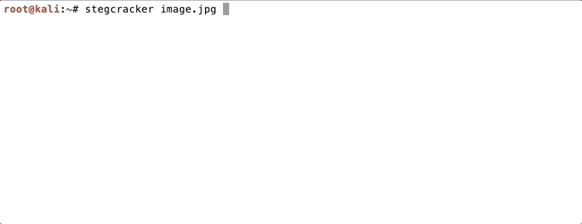
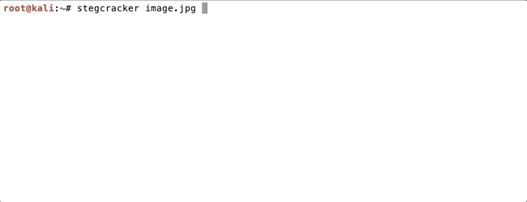
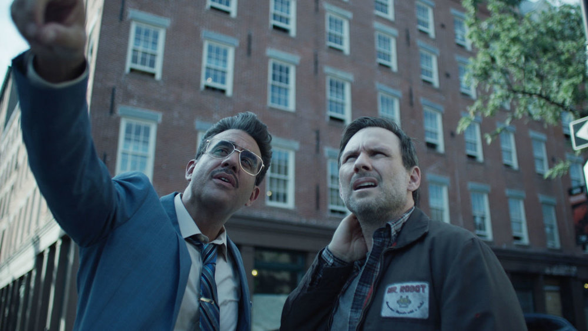

La stéganographie est l'art de la communication secrète. Son objectif est de dissimuler un message dans un autre média (image, sons, texte ...), afin qu'il ne puisse pas être detecté tant visuellement que statistiquement. La stéganographie dite pure est l'ensemble des méthodes servant à cacher le message dans le contenu, comme par exemple caché un message dans un texte (acrostiche).
La stéganographie existe sous plusieurs forme. Par exemple dans la première lettre envoyée à Alfred de Musset par Georges Sand, la stéganographie est utilisé. Puis, l'informatique à permi d'améliorer et d'évoluer cette technique car aujourd'hui, nous pouvons cacher facilement et rapidement toutes sortes de données (dans les vidéos, images numériques, sons etc...). "Apparently neutral’s protest is thoroughly discounted and ignored. Isman hard it. Blockade issue affects pretext for embargo on byproducts, ejecting suets and vegetable oils." Voici un exemple dans lequel on ne prendra que la deuxième lettre de chaque mot. Ce qui nous donne : Pershing sails from NY June 1.
Nous allons apprendre comment savoir si un texte est incrusté dans une image avec l'outils steghide (linux/windows). Sur l'image ci-dessous avec la commande : "steghide info 'nom_image'". Ansi, si des informations sont cachées et protégées par une passphrase, le terminal vous la demandra. Si vous rentrez une mauvaise passphrase vous ne pourrez pas savoir ce qui est caché. (Systeme du mot de passe) En revanche, si vous voulez cracker une passphrase avec la méthode bruteforce, il vous suffira d'installer stegcracker et d'utiliser une wordlist. Il faudra évidemment que le mot de passe soit dans la wordlist !
 

Attention ! Cette méthode ne fonctionne que pour des images au format .jpg
Les autres formats peuvent être analysé par d'autres outils qui eux-même, maîtrisent différentes techniques de stégano.
Pour que vous puissiez vous perfectionner, téléchargé l'image ci-dessous pour tentez votre chance de trouvez ce qu'elle cache !
C'est très simple ! En effet, il suffit d'avoir une image et un fichier .txt (par exemple) dans un même dossier. Ensuite vous saisissez "steghide embed -cf image.jpg -ef fichier.txt". Le teminal vous demandera alors une nouvelle passphrase et le tour est joué !